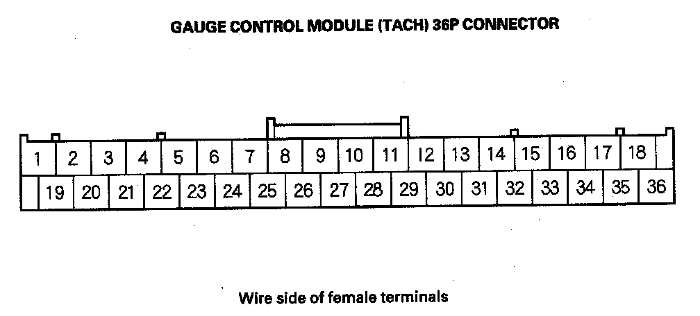
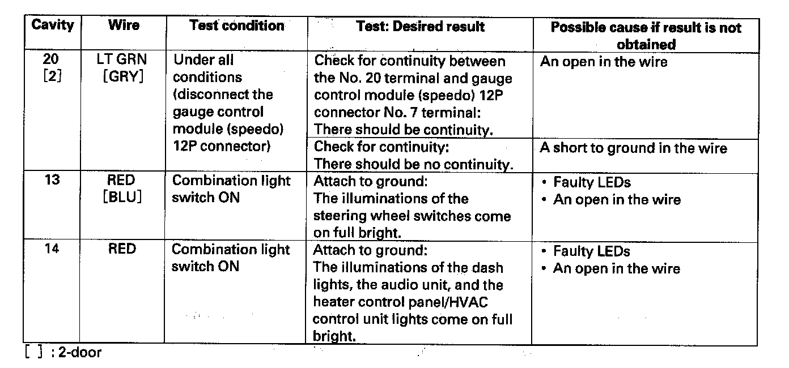
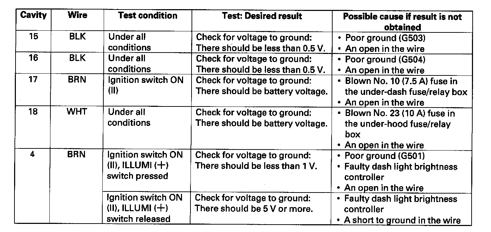
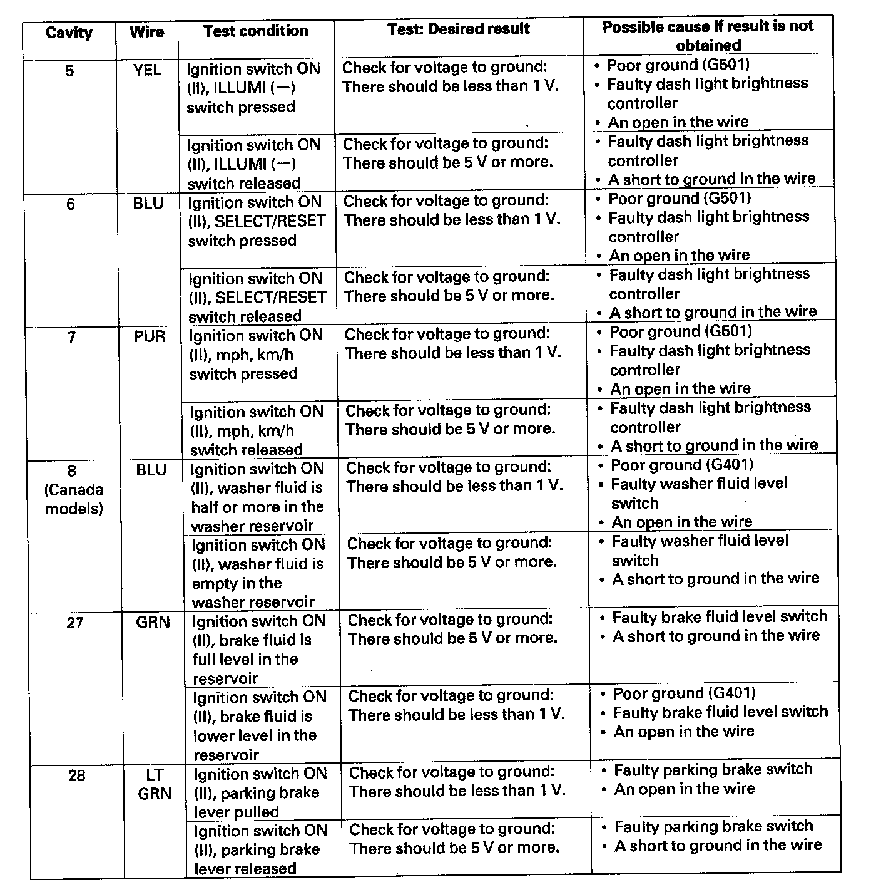

Gauge Control Module (Tach) Input Test
Gauge Control Module (Tach) Input TestNOTE: Before testing, do the gauge control module self-diagnosis procedure, and make sure the B-CAN communication line is OK.
1. Turn the ignition switch OFF.

2. Remove the gauge control module (tach) and disconnect the 36P connector from it.
3. Inspect the connector and socket terminals to be sure they are all making good contact.
- If the terminals are bent, loose or corroded, repair them as necessary, and recheck the system.
- If the terminals are OK, go to step 4.

4. With the connector still disconnected, make these input tests at the connector.
- If any test indicates a problem, find and correct the cause, then recheck the system.
- If all the input tests prove OK, go to step 5.


5. Reconnect the connector to the gauge control module (tach), and make these input tests at the connector.
- If any test indicates a problem, find and correct the cause, then recheck the system.
- If all the input tests prove OK, the gauge control module (tach) must be faulty; replace it.